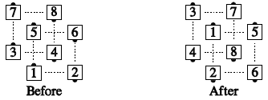
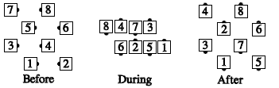

A block is a 4x4 matrix in which no 2 real bodies have a real body between them. There is 1 space between all bodies in a block: in front, in back, left and right.
In blocks you can do only 4-person calls (or sequences of calls) that start and end in a 2x2 formation. e.g. Partner Trade, Partner Tag, Pass Thru, Touch 1/4, Star Thru, Square Thru, Wheel Thru, etc. When doing a call in a block, each dancer works only with the dancers in his block; all block calls start and end on the same 4 spots on the floor. e.g., In Your Block, Walk and Dodge:

For some calls, e.g., In Your Block, Square Chain Thru, the dancers are working in a wave during the call's action. In that case, the waves are slightly offset from each other, just as the blocks are slightly offset. e.g., In Your Block, Square Chain Thru:
